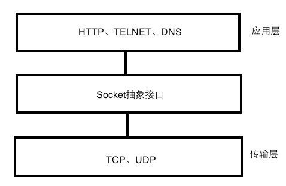

网络技术学习笔记
2018-03-20 | coder
TCP/IP协议端口
端口号的范围从0到65535。
端口分类：
按端口号划分：
公认端口：
0～1023，它们紧密帮定于一些服务，通常这些端口的通讯表明了某种服务的协议。
- 80端口：HTTP通信；
- 21端口：FTP服务；
- 23端口：Telnet服务；
- 25端口：SMTP服务；
- 135端口：RPC服务；
注册端口：
1024～49151，它们松散的绑定于一些服务；
动态和私有端口：
49152～65535，理论上，不应为服务分配这些端口，通常机器从1024开始分配动态端口。
按协议类型划分：
TCP端口：
即传输控制协议端口，需要在客户端和服务器之间建立连接，这样可以提供可靠的数据传输。常见的包括FTP的21端口，Telnet的23端口，SMTP的25端口，HTTP的80端口。
UDP端口：
即用户数据报协议端口，无需在客户端和服务器端建立连接，安全性得不到保障。常见的DNS的53端口，SNMP（简单网络管理协议）的161端口，QQ使用的8000和4000端口。
TCP连接
在TCP/IP协议栈中，源端口号和目的端口号分别与源IP地址和目的IP地址组成套接字（socket），唯一的确定一条TCP连接。
网络层次：

UDP
user datagram protocol，用户数据报协议，是一种无连接的传输层协议。
socket
网络上的两个程序通过一个双向的通信连接实现数据的交换，这个连接的一端称为一个socket。
socket是对TCP协议的封装。